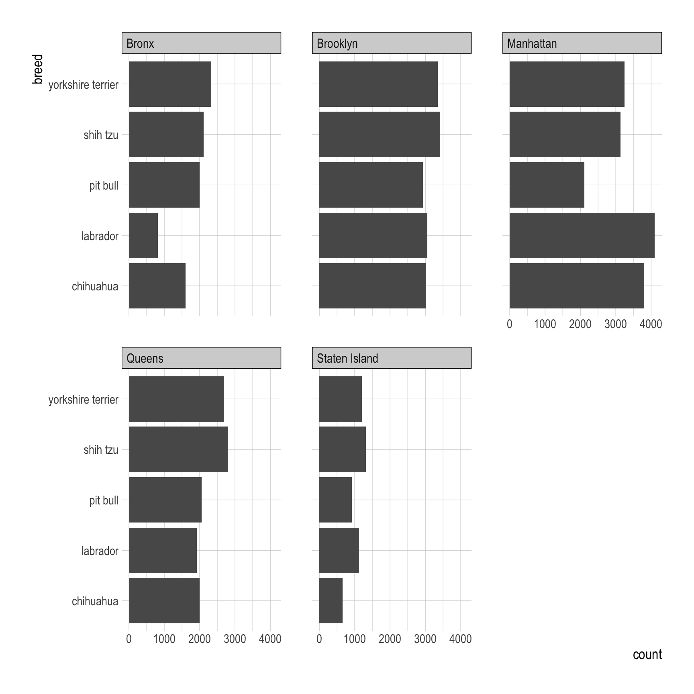
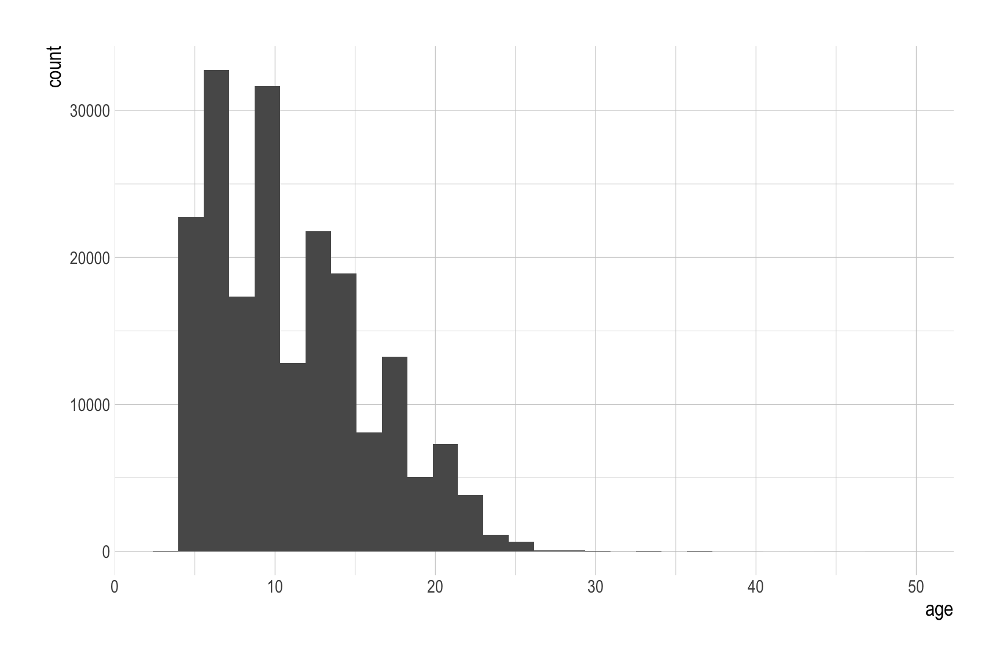

nyc_dogs <- read_csv('https://bcdanl.github.io/data/nyc_dogs_cleaned.csv')Note 23
group_by()
Classwork 11
Q1a
Top 5 most popular breeds
top_5_breeds <- nyc_dogs |>
count(breed) |>
arrange(-n) |>
filter(!is.na(breed)) |>
slice_head(n = 5)top_5_breeds2 <- nyc_dogs |>
count(breed) |>
filter(!is.na(breed)) |>
slice_max(n, n = 5)Q1b
Provide both (1) ggplot code and (2) a simple comment to describe how the distribution of the five popular breeds varies by borough.
only_top_5 <- nyc_dogs |>
filter(breed == "yorkshire terrier" |
breed == "shih tzu" |
breed == "chihuahua" |
breed == "labrador" |
breed == "pit bull" )
only_top_5 <- nyc_dogs |>
filter(breed %in% c("yorkshire terrier", "shih tzu", "chihuahua", "labrador", "pit bull"))
top_5_breeds$breed[1] "yorkshire terrier" "shih tzu" "chihuahua"
[4] "labrador" "pit bull" only_top_5 <- nyc_dogs |>
filter(breed %in% top_5_breeds$breed)ggplot(only_top_5, aes(y = breed)) +
geom_bar() +
facet_wrap(borough ~.)
Q1c
Find the five most popular breeds in each borough.
q1c <- nyc_dogs |>
group_by(borough) |>
count(breed) |>
filter(!is.na(breed)) |>
slice_max(n, n = 5)q1c2 <- nyc_dogs |>
group_by(borough, breed) |>
summarize(n_breed = n()) |>
filter(!is.na(breed)) |>
slice_max(n_breed, n = 5)q1c_rank <- nyc_dogs |>
group_by(borough) |>
count(breed) |>
# arrange(borough, -n) |>
filter(!is.na(breed)) |>
mutate(ranking = dense_rank(-n)) |> # ranking within a group
filter(ranking <= 5 )q1c_head <- nyc_dogs |>
group_by(borough) |>
count(breed) |>
arrange(borough, -n) |>
filter(!is.na(breed)) |>
slice_head(n = 5)Q1d
Find the five most popular dog names for each gender.
q1d <- nyc_dogs |>
filter(!is.na(gender)) |>
filter(!is.na(name)) |>
group_by(gender) |>
count(name) |>
slice_max(n, n = 5)Q1e
Find the five most popular dog names for each gender in each borough.
q1e_tmp <- nyc_dogs |>
filter(!is.na(name)) |>
filter(!is.na(gender)) |>
count(borough, gender, name)
q1e <- nyc_dogs |>
filter(!is.na(name)) |>
filter(!is.na(gender)) |>
count(borough, gender, name) |>
group_by(borough, gender) |>
slice_max(n, n = 5)q1e_2 <- nyc_dogs |>
filter(!is.na(name)) |>
filter(!is.na(gender)) |>
group_by(borough, gender) |>
count(name) |>
slice_max(n, n = 5)Q1f
Assume that all dogs in the
nyc_dogsdata frame are alive as of today.Provide both (1) ggplot code and (2) a simple comment to describe the distribution of age for each borough.
nyc_dogs <- nyc_dogs |>
mutate(age = 2024 - birth_year)
ggplot(nyc_dogs, aes(x = age)) +
geom_histogram()
df <- data.frame(
group = c("A", "B", "A", "B"),
score = c(50, 65, 70, 85)
)
df_sum <- df |>
group_by(group) |>
summarize(
mean_val = mean(score)
)
df_sum_mutate <- df |>
group_by(group) |>
mutate(
mean_val = mean(score)
)Counting with logical conditions
Q. For each date, how many flights left before 5am?
library(nycflights13)
flights <- flights
df <- flights |>
filter(dep_time < 500) |>
group_by(year, month, day) |>
count()
df2 <- flights |>
group_by(year, month, day) |>
summarize(n_500 = sum(dep_time < 500, na.rm = T))Q. For each date, what proportion of flights are delayed by more than an hour?
df_delay <- flights |>
group_by(year, month, day) |>
summarize(prop = mean(dep_delay > 60, na.rm = T))
df_delay_long <- flights |>
filter(dep_delay > 60) |>
group_by(year, month, day) |>
summarise(n = n())
df_all <- flights |>
group_by(year, month, day) |>
summarise(n = sum(!is.na(dep_delay)))Q. For each airline, how many flights are cancelled?
- Assume that
- A flight was cancelled if either
dep_timeorarr_timeisNA.
- A flight was cancelled if either
df_cancelled <- flights |>
filter(is.na(dep_time)) |>
group_by(carrier) |>
summarise(n = n())
df_cancelled2 <- flights |>
filter(is.na(dep_time) | is.na(arr_time)) |>
group_by(carrier) |>
summarise(n = n())df_cancelled3 <- flights |>
group_by(carrier) |>
summarise(prop_canclled = mean(is.na(dep_time) | is.na(arr_time), na.rm = T))Grouped filter and mutate
df <- data.frame(
grade = c("A", "A", "B", "B", "C"),
score = c(100, 96, 85, 83, 76)
)
df_filter <- df |>
group_by(grade) |>
filter( n() < 2)
df_filter2 <- df |>
group_by(grade) |>
mutate( n_obs = n()) |>
filter( n_obs < 2)E.g., For each date, find the 10 worst flights in terms of arr_delay.
df_worst <- flights |>
group_by(year, month, day) |>
slice_max(arr_delay, n = 10) df_worst2 <- flights |>
group_by(year, month, day) |>
filter(dense_rank(-arr_delay) <= 10)E.g., Find the destination airport that had flights from NYC more than 17250 times in 2013.
not_cancelled <- flights |>
filter(!(is.na(dep_time) | is.na(arr_time)))
df_dest <- not_cancelled |>
count(dest) |>
filter(n > 17250)
df_dest2 <- flights |>
count(dest) |>
filter(n > 17250)
#
# df_dest3 <- flights |>
# group_by(dest) |>
# filter(n() > 17250)